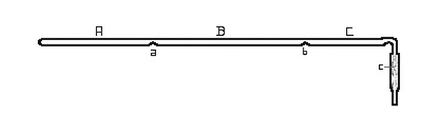
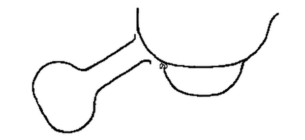
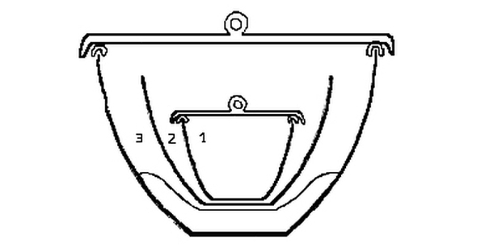

Dissertation,
Presented to
The Board of University Studies
of The Johns Hopkins University,
For The Degree of
Doctor of Philosophy,
By
Harry C. Jones
1892.
| Page | |
| Determination of the Atomic Weight of Cadmium | 1 |
| Introduction and Historical Statement | 2 |
| Preparation of Pure Cadmium | 22 |
| The Preparation of Pure Nitric Acid | 28 |
| The Arrangement of Crucibles | 30 |
| The Mode of Procedure | 32 |
| The Weighing | 37 |
| Taring the Crucibles | 40 |
| The Results | 42 |
| Objections to the Method | 45 |
| Advantages of the Method | 48 |
| The Oxalate Method | 50 |
| Preparation of Pure Oxalic Acid | 51 |
| Preparation of Cadmium Oxalate | 52 |
| Mode of Procedure | 53 |
| The Drying and Weighing of the Oxalate | 55 |
| The Results | 58 |
| Advantages of the Method | 60 |
| Disadvantages of the Method | 61 |
| Preparation of Certain Sub-compounds of Cadmium | 63 |
| Historical | 64 |
| The Preparation of Cd₄Cl₇ | 66 |
| The Preparation of Cd₄Br₇ | 78 |
| The Preparation of Cd₁₂I₂₃ | 82 |
| The Preparation of Cadmium Hydroxide and Oxide | 82 |
| Notes on Crystals of Metallic Cadmium | 97 |
| The Cohesion Phenomena of Cadmium | 103 |
| Biographical Sketch | 106 |
Acknowledgment.
It affords me great pleasure to express my sincere thanks to Professor Remsen for his instruction and personal supervision during my entire connection with the University; to Dr. Morse, under whose immediate guidance the work described in this dissertation was completed; to Dr. Renouf for valuable assistance in qualitative chemistry and to Dr. Williams, with whom the branches of mineralogy and geology were followed as subordinate subjects.
[Pg 1]
[Pg 2]
A careful examination of the literature on the atomic weight of cadmium will convince any one that considerable uncertainty yet remains in reference to this constant. Six experimenters have worked on this problem but the results of no one of them can be accepted as being more accurate than those of all others. The value assigned to cadmium varies from 111.48 to 112.32 on the basis of oxygen = 16. The best work has apparently been done by von Hauer, Lenssen and Huntington. The results of these three seem entitled to about equal confidence, yet the figure obtained by von Hauer differs from that of Huntington by three tenths of a unit. [Pg 3]
The more prominent difficulties which have been encountered were:
First. The preparation of cadmium compounds free from all impurities, and which at the same time were well adapted to weighing.
Second. The lack of a thoroughly simple and exact method for the analysis of cadmium compounds.
Third. Insufficient care in weighing in many cases whereby small errors were introduced into the results.
The methods which have been employed are:
1 Conversion of the metal into the oxide. (Stromeyer).
2 Conversion of the sulphate into the sulphide. (von Hauer and Partridge).
3 Decomposition of the oxalate to the oxide. (Lenssen and Partridge).
4 Determination of the chlorine in cadmium chloride, by which the relation between the chloride and metallic silver was established. (Dumas.)
5 Precipitation of the bromine in cadmium bromide as silver bromide. (Huntington.)
6 The conversion of the oxalate into the sulphide. (Partridge.)
The different pieces of work will be taken up in chronological order and briefly considered.
Stromeyer, Schurigg Journ. 22, 366. 1818, determined the atomic weight of cadmium a short time after the discovery of the element. He does not describe his method in detail but established the relation between cadmium and oxygen to be:
Cd : O = 100 : 14.352.
| If the atomic weight of | oxygen = | 16, |
| ” ””” | cadmium = | 111.483. |
The very low result as compared with all subsequent work was probably due to the presence of a small amount of zinc, since the cadmium used was obtained from zinc ores and no adequate means of separation from the zinc is described.
von Hauer, Journ. f. prakt. Chem. 72, 338. 1857. His method consisted in reducing a weighed amount of cadmium sulphate to the sulphide in a stream of hydrogen sulphide, under pressure, at an elevated temperature, and weighing the sulphide. The reduction was shown to be complete by proving the absence of sulphate in the sulphide.
| 64.2051 | grams of | cadmium sulphate | |
| gave | 44.4491 | ” ” | ” sulphide. |
| If the atomic weight of | oxygen = | 16, |
| ” ” ””” | sulphur = | 32.059, |
| ” ””” | cadmium = | 111.935. |
The atomic weight of cadmium calculated as an average of the nine determinations made using the above values for oxygen and sulphur = 111.94.
The work of von Hauer is greatly to be preferred to that of Stromeyer. The large amount of material used in each determination tended to lessen any experimental error. A very considerable degree of care seems to have been exercised in purifying the cadmium sulphate. In determinations 1-5 a different specimen of sulphate was employed from [Pg 7] that in determinations 6-9. The average value found in the first five determinations = 111.910, in the last four = 111.977. The close agreement between the results obtained from the different preparations of the sulphate argues in favor of a fair degree of purity for all the material.
The method of weighing the more or less hygroscopic cadmium sulphate is open to criticism when employed in accurate work. The cadmium sulphate was placed in an open boat, dried, cooled over sulphuric acid, and weighed. It was again dried, cooled as before, and weighed. The second weighing could be quickly accomplished since the approximate weight was known. The two weighings agreed to within less than a milligram or a [Pg 8] third drying and weighing were made. An error of a milligram in the weight of the sulphate produced an average error in the atomic weight of cadmium of about .06. That a discrepancy of greater or less magnitude was introduced from this source will be readily seen.
Dumas Ann. Chim. Phys. 55, 158. 1859, determined the relation between cadmium chloride and the metallic silver required to precipitate the chlorine. Metallic cadmium was dissolved in boiling hydrochloric acid and the solution evaporated. The cadmium chloride was fused for five or six hours in a stream of hydrochloric acid gas. Six determinations were made. 23.0645 grams of cadmium chloride were equivalent to 27.173 grams of metallic silver. [Pg 9]
| If the atomic weight of | silver = | 107.93. |
| ” ” ””” | chlorine = | 35.45. |
| ” ””” | cadmium = | 112.322. |
The atomic weight of cadmium calculated as the average of the six determinations made, using the above values for silver and chlorine = 112.241.
The large difference between the results would indicate some considerable source of error in part or all of the determinations. The first three determinations were made from a different specimen of cadmium from the last three.
In the first three the cadmium used does not seem to have been purified [Pg 10] and the cadmium chloride prepared from it was more or less tinted brown. In the last three a new specimen of metal was used which in Dumas’ words could reasonably be considered to be absolutely pure. The chloride prepared from it was colorless, well crystallized and perfectly soluble in water. In order to show clearly the wide discrepancy between the results obtained from the two specimens of cadmium which were used, the separate determinations are given in detail.
| At. Wt. | |||
|---|---|---|---|
| CdCl₂ | Ag. | Cadmium. | |
| 1 | 2.369 | 2.791 | 112.322 |
| 2 | 4.540 | 5.348 | 112.347 |
| 3 | 6.177 | 7.260 | 112.759 |
| 4 | 2.404 | 2.841 | 111.756 |
| 5 | 3.5325 | 4.166 | 112.135 |
| 6 | 4.042 | 4.767 | 112.130 |
The average result of the first three determinations = 112.476. The average result of the last three determinations = 112.007. From Dumas’ own statement concerning the purity of the cadmium chloride analyzed, determinations 4-6 are much to be preferred to determinations 1-3 and the most probable value from Dumas’ work would be very nearly 112.
Lenssen Journ. f. prakt. Chem. 79, 281. 1860, regarded the oxalate of cadmium as well adapted to the determination of the atomic weight of cadmium. A solution of cadmium chloride which had been purified by repeated crystallization was treated with an excess of a solution of pure oxalic acid. The cadmium oxalate formed was filtered off, washed, and carefully dried in the air at 150° C. until the last trace of water [Pg 12] was removed. 1.5697 grams cadmium oxalate gave 1.0047 grams cadmium oxide.
| If the atomic weight of | oxygen = | 16, |
| ” ” ”” | carbon = | 12.003, |
| ” ”” | cadmium = | 112.043. |
The average of the three determinations using the above values for oxygen and carbon is 112.067.
The small amount of material used in each determination, the small number of determinations made, and the rather large difference between the highest and lowest result are objectionable. There are certain weak points in the method but to these reference will be made later. [Pg 13]
Huntington, Proc. Amer. Acad. 17, 28. 1882, working with Cooke, made two series of determinations of the atomic weight of cadmium. In the first series the relation between cadmium bromide and the silver bromide formed from it was determined. In the second, the relation between cadmium bromide and the silver required to precipitate the bromine.
The cadmium bromide was prepared by dissolving the carbonate in hydrobromic acid and subliming the product in a stream of carbon dioxide.
In the first series of eight determinations 23.3275 grams of cadmium bromide were equivalent to 32.2098 grams of silver bromide.
| If the atomic weight of | silver = | 107.93. |
| ” ” ””” | bromine = | 79.95. |
| ” ””” | cadmium = | 122.239. [Pg 14] |
Where the difference between the maximum and minimum value is slight, the average of the separate determinations agrees closely with the number found by comparing the total substance used with the total product obtained. The latter method of calculation seems however to be preferable.
In the second series of eight determinations 28.6668 grams of cadmium bromide were equivalent to 22.7379 grams of silver.
Using the same values for silver and bromine, the atomic weight of cadmium = 112.245.
The agreement of the separate determinations with each other is fairly [Pg 15] close and the average of the two series of determinations is nearly the same. Huntington took great care in the purification of his material and in the carrying out of his method, which are strong arguments in favor of his work, yet his method is not as simple as could be desired where the nature of the work demands the greatest possible accuracy in all details and it also appears to be subject to some of the errors common to ordinary analytical operations.
Partridge. Amer. Journ. Science XL, 377. 1890. Methods: 1ˢᵗ. Decomposition of the oxalate to the oxide. 2ⁿᵈ. Reduction of the sulphate to the sulphide. 3ʳᵈ. Conversion of the oxalate into the sulphide. As an average of the determinations made by each method Partridge gives: [Pg 16]
| 1ˢᵗ series, | atomic weight of cadmium | = 111.8027. |
| 2ⁿᵈ ” | ”” ”” | = 111.7969. |
| 3ʳᵈ ” | ”” ”” | = 111.8050. |
An excellent agreement between results obtained by different methods[1].
That this very close agreement is only apparent has been shown by Clarke. He has found that the above calculations are based on the assumption that the atomic weight of carbon = 12, and that of sulphur = 32 when oxygen = 16. There seems to be little justification for this rather arbitrary selection by Partridge since the most refined work shows that whole numbers do not express the most probable atomic weights of carbon and sulphur in a system where oxygen = 16.
The atomic weight of cadmium calculated from the total material used and the total product found in each of the three series is:
| O = 16. | C = 12. | S = 32. | At.Wt.Cd. | |
|---|---|---|---|---|
| 1ˢᵗ series, | CdC₂O₄ : CdO = | 12.66368g. : | 8.10031g. | 111.805. |
| 2ⁿᵈ ” | CdSO₄ : CdS = | 15.93505g. : | 11.02691g. | 111.786. |
| 3ʳᵈ ” | CdC₂O₄ : CdS = | 16.85228g. : | 12.12906g. | 111.806. |
| difference, | 0.020. | |||
| O = 16. | C = 12.003 | S = 32.059 | At.Wt.Cd. | |
|---|---|---|---|---|
| 1ˢᵗ series, | CdC₂O₄ : CdO = | 12.66368g. : | 8.10031g. | 111.816. |
| 2ⁿᵈ ” | CdSO₄ : CdS = | 15.93505g. : | 11.02691g. | 111.727. |
| 3ʳᵈ ” | CdC₂O₄ : CdS = | 16.85228g. : | 12.12906g. | 111.610. |
| difference, | 0.206. | |||
As Clarke has pointed out when those values are chosen for carbon and sulphur which are founded on the best experimental evidence the agreement between the different series of results as calculated by Partridge is somewhat modified.
I have repeated the work on which series I is based and would call attention to the following points in which it appears to have been experimentally defective.
1 The metal was only distilled twice in a vacuum. It has been found in this laboratory that perfectly pure cadmium or zinc can be prepared only by repeated distillations, each one being carried on slowly to allow the impurities to separate by means of their difference in volatility.
2 The supposed mixture of metal and oxide resulting from the decomposition of the oxalate was only moistened with a few drops of nitric acid in order to reoxidize any reduced metal. [Pg 19] Unless the entire mass of metal and oxide was dissolved there would be danger of the presence of free undissolved metal which would possess an appreciable vapor-tension below the temperature of decomposition of cadmium nitrate. An appreciable loss in weight resulting from a distillation of the metal out of the crucible might easily result.
3 It seems very probable that the cadmium nitrate was not heated sufficiently to remove all traces of the oxides of nitrogen. I have found that this could only be accomplished by long continued heating. Constant weight was not sufficient to have decided this point since it was also found that this could be reached short of complete decomposition, if the temperature was too low to remove the last traces of these oxides. Some very delicate test for such oxides should have been applied at the end of each experiment.
The following table contains a summary of the results thus far obtained.
When two values are given for one series of determinations, the first is calculated from the total material used and the total product found, the second is an average of the results of the separate experiments. Oxygen is taken as 16 throughout.
| Date. | Investigators. | At.Wt.Cd. | ||
|---|---|---|---|---|
| 1818, | Stromeyer, | 111.483 | ||
| 1857, | von Hauer, | 111.935 | ||
| 111.940 | ||||
| 1859, | Dumas, | 112.322 | ||
| 112.241 | ||||
| 1860, | Lenssen, | 112.043 | ||
| 112.067 | ||||
| 1882, | Huntington, | 1ˢᵗ series | 112.239 | [Pg 21] |
| ” | 2ⁿᵈ ” | 112.245 | ||
| 1890, | Partridge, | 1ˢᵗ series | 111.805 | |
| ” | 2ⁿᵈ ” | 111.786 | ||
| ” | 3ʳᵈ ” | 111.806 | ||
In the above calculation of Partridge’s results C = 12. S = 32. In the following carbon is taken as 12.003 and sulphur is 32.059.
| 1890, | Partridge, | 1ˢᵗ series | 111.816 | |
| ” | 2ⁿᵈ ” | 111.727 | ||
| ” | 3ʳᵈ ” | 111.610 |
After a careful examination of the methods available it becomes evident that no one of them was per se as accurate as the method employed by Morse and Burton,[2] for the determination of the atomic weight of zinc, and more recently by Burton and Morse,[3] for the [Pg 22] determination of the atomic weight of magnesium. The method of work was to prepare pure metallic cadmium, to convert a weighed portion of the metal into nitrate by means of pure nitric acid, to decompose the nitrate completely to oxide and to weigh the oxide.
The work of preparing pure cadmium was begun more than two years ago by Mr. W. V. Metcalf with Dr. H. N. Morse. I wish to express here my sincere thanks to him for the material with which the following determinations were made. The cadmium used by him was obtained from Schuchart and marked “Met. prss. (galv.) redus.” [Pg 23]
The method of purification by fractional distillation in a vacuum, was essentially that employed by Morse and Burton for the purification of metallic zinc.
The distillation was carried out in hard glass tubes of the size of ordinary combustion tubing.
Fig. 1.

Fig. 1. represents such a tube. A hard glass tube, 600-700 mm. in length, was closed at one end and about 130 grams of cadmium introduced. The walls of the tube were heated and indented at the two points a, and b, with a red-hot file, dividing the tube into three sections marked A, B and C. The open end of the tube was drawn out, bent, and attached to a Sprengel air-pump by means of a rubber tube. [Pg 24]
The joint was tied tightly with waxed cord and surrounded by mercury. When the manometer indicated that the tube was exhausted, it was gradually heated by the combustion furnace in which it rested. The metal in A melted and distilled slowly into the front portion of the tube. Most of it condensed in B, while a small part, together with any more volatile impurity, collected in C which was kept cooler than the remainder of the tube. When about four-fifths of the metal placed in A had distilled over, the tube was very slowly cooled. When cold, the tube was broken open, the portions in A and C being rejected in every case, while the metal was recovered from B in the form of a bar resting [Pg 25] on the bottom of the tube, together with some crystal aggregates, suspended from the top and sides. A few crystal individuals were secured but the measurement of these will be considered later. The metal separated from the glass with a highly lustrous surface and did not attack the glass in the least.
The first distillation was effected in a tube bridged as represented in Fig. 1, but drawn out at each end. The original cadmium powder was heated in the tube in a stream of pure hydrogen gas, for the purpose of obtaining the metal in the form of bars, and to reduce any cadmium oxide contained in the powder.
Six distillations were made in a vacuum. In the first, 630 grams of metal were used being distilled in quantities of about 130 grams each. [Pg 26] At the end of the sixth distillation, there were about 100 grams of pure cadmium at disposal. In the fifth and sixth distillations, the metal was heated just above the melting point for from twenty to twenty-four hours, before being forced over into the middle portion of the tube. By this means all the remaining traces of the more volatile arsenic were driven into the front part of the tube and separated from the cadmium.
The distillations.
The residue represents the undistilled portion remaining in A. The distillate, the material obtained from B after the distillation was completed. The coating, the substance which condensed in C.
| Residue, | Cd, Pt, Zn,? As?. | |
| Distillation I | Distillate, | Cd, Zn,? As? |
| Coating, | Cd, Zn,? As?. [Pg 27] | |
| Residue, | Cd, Zn?, As?. | |
| Distillation II | Distillate, | Cd, Zn?, As?. |
| Coating, | Cd, Zn?, As?. | |
| Residue, | Cd, Zn?, As?. | |
| Distillation III | Distillate, | Cd, Zn?, As?. |
| Coating, | Cd, Zn?, As?. | |
| Residue, | Cd, Zn?, As?. | |
| Distillation IV | Distillate, | Cd, Zn?, As?. |
| Coating, | Cd, Zn?, As?. | |
| Residue, | Cd. | |
| Distillation V | Distillate, | Cd. |
| Coating, | Cd, As?. | |
| Residue, | Cd. | |
| Distillation VI | Distillate, | Cd. |
| Coating, | Cd. |
[Pg 28] The distillate from the last distillation was examined spectroscopically by Professor Rowland and found to be free from all traces of impurity which would be detected by that method. The chemical test for arsenic was more delicate than the spectroscopic and this failed to reveal a trace.
The method of preparing the pure acid and of preserving and transferring it was the same as adopted by Morse and Burton in their work on the atomic weight of zinc.
Fig. 2.

[Pg 29] The simple form of apparatus is represented in fig. 2. A large platinum vessel containing fragments of ice was supported on a smaller platinum dish, from which it was separated by hooks of large platinum wire. The acid was distilled from a small flask as represented in the drawing.
The purest nitric acid which could be obtained was diluted with about an equal volume of water. The vessel containing the acid was heated very gently that the distillation might take place without boiling. The dilute acid condensed on the cold surface of the larger dish and collected in the smaller, in which it was preserved until used. This acid gave no residue on evaporation. [Pg 30]
Fig. 3.

The arrangement of the crucibles in which the determinations were made is represented in fig. 3. 1 is a small porcelain crucible, (00) from the exterior and lid of which the glaze had been removed by hydrofluoric acid. The lid was separated from the crucible by hooks made from thick platinum wire, to allow free communication between the contents of the crucible and the external air. This would facilitate [Pg 31] the outward diffusion of the oxides of nitrogen when liberated from the nitrate. 2 is an uncovered porcelain crucible (no. II) in which 1 was placed. From the exterior the glaze had been removed to prevent the crucible from adhering to the unglazed porcelain scorifier on which it rested. The exterior was carefully brushed after treatment with hydrofluoric acid to remove all loose particles adhering to its surface. Crucibles 1 and 2 were not separated during a determination.
3 is a nickel crucible about two and a half inches in diameter. The porcelain crucibles were not allowed to touch the nickel at any point. The nickel crucible was covered by a lid of nickel. [Pg 32]
A piece of cadmium weighing from two to three grams was cut from the bar of the metal by means of a steel chisel. This was seized with steel forceps and filed with a hard steel file to about one half the original weight. Care was taken to remove the entire exterior portion of the metal which had come in contact with the chisel or had stood exposed to the air. The plug of metal was then carefully brushed and examined with a lens to insure the removal of all loose particles from the surface.
Crucibles 1 and 2 having been brought to constant weight against their tare, were ready for use. The piece of cadmium was weighed and placed in 1. An excess of pure nitric acid was added and a gentle heat applied [Pg 33] until all the metal had dissolved. This required from twenty to forty hours.
A sand-bath was constructed by placing a large porcelain crucible in an iron crucible and filling the intervening space with sand. The pair of crucibles (1 and 2) was placed in the porcelain crucible and the contents evaporated to dryness by warming very carefully at first and gradually increasing the temperature. The pair of crucibles was then transferred to a bath constructed as the above where iron filings took the place of sand. This was heated by a single burner until the nitrate was all decomposed when a triple burner was added and finally two for six or eight hours. This was not sufficient to effect complete [Pg 34] decomposition. When cold, the pair of crucibles was placed in the nickel crucible as represented in fig. 3 and sharply heated over a blast-lamp for several hours. This completed the decomposition of the nitrate and the removal of the last traces of oxides of nitrogen.
During the blasting the lid on crucible 3 was raised a little to one side to allow free access of air. The nickel crucible was forced tightly into a hole cut in the center of an asbestos board about ten inches in diameter, to prevent any reducing gases from the lamp entering the crucibles while hot. This was the same arrangement as was used by Partridge[4].
It was found that the final decomposition of the nitrate could not be effected in a muffle furnace as with zinc, since at very high [Pg 35] temperatures cadmium oxide attacked the porcelain with great energy and injured the crucibles.
The decomposition of the nitrate was shown to be complete not by constant weight alone, but by testing for oxides of nitrogen with starch paste rendered extremely sensitive with potassium iodide. That the test should be reliable, Morse and Burton have pointed out that all the reagents used must be free from oxidizing agents. The presence of iodate in the iodide is especially to be avoided. This was removed by boiling the solution with zinc amalgam. Air was removed from all the solutions by boiling.
When the starch-potassium-iodide solution had been prepared as sensitive as possible, a portion of it was treated with a little [Pg 36] hydrochloric acid, to determine if any iodine was liberated. If no coloration was observed the cadmium oxide was added. It dissolved in the hydrochloric acid and if any oxides of nitrogen were present they would have revealed themselves by the liberation of iodine and a blue coloration of the starch paste.
In no one of the ten determinations was the slightest coloration detected.
An equal volume of nitric acid was added to the pair of crucibles used as a tare as to those containing the determination, and they were heated in exactly the same manner and for the same length of time.
The crucibles containing the cadmium oxide were heated over the blast-lamp for an hour, weighed against their tare, reheated, again [Pg 37] weighed, and this continued until there was no further change in weight. Usually from two to four hours heating over the blast-lamp was sufficient to completely decompose the nitrate. The test for oxides of nitrogen was then applied.
I found that practically constant weight could be reached short of compete decomposition, at a temperature below that necessary to transform all the nitrate into the oxide. This necessitated the final test for oxides of nitrogen.
The balance used was a No. 8 long-armed one, made by Becker and Sons. It was supported by iron brackets fastened to one of the foundation walls of the laboratory. [Pg 38]
Here it would be subjected to the least jar and was also well protected from air currents. All weighings were made between the hours of one and five in the morning when the surroundings were as quiet as could be desired. A very slight disturbance was detected by the vibrations on the surface of a cup of mercury placed conveniently between the pans.
That the presence of the operator might not produce any change in the balance during the weighing, he closed the room, placed the light above and behind his head and took his position in front of the balance at least an hour before making a weighing. When his presence no longer affected the balance (which was shown by the zero point remaining [Pg 39] constant in a series of determinations) the weighing was begun. The method of weighing by vibrations and upon both pans was employed throughout.
Each zero point was taken as the mean of three closely agreeing zero determinations; each one of the three being the mean of seven readings. The zero of the balance empty was determined just before and after each weighing to detect any change in its position. Usually none was observed. The sensibility of the balance was taken at each weighing with the weights used at that weighing. A displacement of the zero point about six divisions of the ivory scale was effected by the addition of one milligram.
The weights had been especially adjusted and were carefully compared with each other before using. [Pg 40]
Weighing by tares was adopted as preferable to any other method. By this means all errors resulting from changes in the moisture of the air were avoided and any errors which might have been introduced by heating or manipulating the crucibles would be counteracted by treating the tare in exactly the same manner.
A pair of crucibles (1 and 2 in the figure) was selected and treated as described. Another pair about the same size but a little lighter was prepared in exactly the same way. Each pair was placed in the nickel crucible and heated by means of the blast-lamp for half an hour. [Pg 41]
After cooling in desiccators, both pairs of crucibles where placed in the closed balance until no longer affected by the moisture of the air, which was also dried by calcium chloride. The tare was brought to within one tenth of a milligram of the weight of the crucibles against which it was being tared, by adding fragments of porcelain obtained from another crucible of the same composition. The difference in weight between the tare and its mate was then accurately ascertained.
Each pair of crucibles was again placed in the nickel crucible and blasted for half an hour. They were then reweighed, to determine if the difference in weight previously found had remained constant. In no case was any change detected, yet this precaution was always taken. [Pg 42]
The following table contains the results of ten successive determinations.
| At. Wt. Cd. | At. Wt. Cd. | |||
|---|---|---|---|---|
| Wt. of Cd. | Wt. of CdO. | (O = 16) | (O = 15.96) | |
| I | 1.77891 | 2.03288 | 112.070 | 111.790 |
| II | 1.82492 | 2.08544 | 112.078 | 111.798 |
| III | 1.74688 | 1.99626 | 112.078 | 111.798 |
| IV | 1.57000 | 1.79418 | 112.053 | 111.773 |
| V | 1.98481 | 2.26820 | 112.061 | 111.781 |
| VI | 2.27297 | 2.59751 | 112.059 | 111.779 |
| VII | 1.75695 | 2.00775 | 112.086 | 111.806 |
| VIII | 1.70028 | 1.94305 | 112.059 | 111.779 |
| IX | 1.92237 | 2.19679 | 112.083 | 111.803 |
| X | 1.92081 | 2.19502 | 112.078 | 111.798 |
| Mean, | 112.0705. | 111.7905. | ||
| Maximum, | 112.086. | 111.806. | ||
| Minimum, | 112.053. | 111.773. | ||
| Difference, | .033. | .033. | ||
[Pg 43] Calculating the atomic weight of cadmium from the total amount of metal used and oxide found, we have:
| At. Wt. of Cd. | At. Wt. of Cd. |
|---|---|
| (O = 16) | (O = 15.96) |
| 112.0706. | 111.7904. |
These results agree more closely with those of von Hauer and Lenssen than with those of any other experimenter. The following table gives a comparison of the work of these investigators with that herein described: [Pg 44]
| von Hauer. | Lenssen. | Work here described. | |
|---|---|---|---|
| 9 determinations. | 3 determinations. | 10 determinations. | |
| (O = 16) | (O = 16) | (O = 16) | |
| Mean | 111.940 | 112.067 | 112.0705 |
| Max. | 112.121 | 112.304 | 112.086 |
| Min. | 111.796 | 111.911 | 112.053 |
| Diff. | .325 | .393 | .033 |
A difference of three or four tenths of a unit between the different results of a series leaves considerable doubt as to the accuracy of the method employed and to the value obtained.
The figure selected by Ostwald,[5] as most probable for the atomic weight of cadmium is 112.08. This is the mean of the results on von Hauer and Huntington. My own work leads me to believe that this number is very close to the true value when oxygen is taken as 16.
Marignac[6] offered the objection to this method for determining the atomic weight of zinc that the zinc oxide dissociated when heated in platinum over the blast-lamp. The same objection might be urged against this method for determining the atomic weight of cadmium, had it not been shown that the objection does not hold for zinc[7]. What took place was a reduction of the zinc oxide by the highly heated hydrogen which passed through the hot platinum. [Pg 46]
It was shown that zinc oxide can be heated in a platinum vessel in a muffle furnace, to the melting point of steel, without undergoing any dissociation, or in any wise losing in weight. This source of error was avoided by using porcelain vessels, which were not brought into contact with the free flame.
The statement of Marignac that the oxide of zinc derived from the nitrate retains oxides of nitrogen even when heated to the temperature at which it begins to undergo dissociation, was shown by the same authors to be without foundation. The basis of this objection is doubtless to be found in the imperfect method of testing for such oxides. [Pg 47]
It might be urged as an objection to this method that the difference in weight between the metal and oxide is not very great, therefore any error in weighing would be multiplied in the result. At first sight this objection may appear valid, but since the substances weighed were so well adapted to that purpose and the weighings could be made with such a high degree of accuracy no appreciable error could have resulted from this source.
A crucible with its contents was repeatedly weighed against its tare and weights to ascertain the difference between successive weighings under the conditions employed. A number of weighings agreed to .00002 gr. and in some instances to half this amount. [Pg 48]
1 The great advantage of the method is its extreme simplicity. From the beginning of an experiment until the end the contents of the crucible are not brought into contact with any foreign substance. By this means small errors resulting from incomplete precipitation, and filtration and all other errors incident to ordinary processes of analysis were avoided.
2 The nature of the metal and its oxide rendered them well adapted to weighing. The specific gravity of the metal and oxide approached so closely to that of the weights, that it was unnecessary to reduce the weighings to a vacuum standard. [Pg 49]
3 The advantages derived from weighing by tares have been pointed out.
4 The closely agreeing results speak strongly in favor of the accuracy of the method.
[Pg 50]
The method consists in taking a weighed amount of cadmium oxalate, decomposing it by heat, when a mixture of oxide and metal are said to be formed, dissolving this mixture in nitric acid, converting the nitrate into oxide and weighing the oxide.
Lenssen[8] obtained results by this method which agree very closely with those recorded in the earlier part of this dissertation.
Working with the same method, Partridge[9] arrived at a value about one fourth of a unit lower than that of Lenssen. [Pg 51]
It appeared desirable that this method should be repeated with the greatest care to ascertain what result it would give under the most favorable conditions.
Having a supply of pure cadmium it was necessary to prepare pure oxalic acid.
The commercial acid was crystallized three times from cold water to separate it from acid oxalates. It was then boiled for two days with a 15 per cent solution of hydrochloric acid, to remove any mineral matter present. The acid which crystallized from the hydrochloric acid solution was recrystallized twice from hot, redistilled alcohol and [Pg 52] twice from pure ether. It was finally boiled with water to decompose any ethyl oxalate and twice crystallized from pure water. The acid was dried in the air at ordinary temperatures. This acid left no residue on ignition.
A piece of cadmium was dissolved in pure nitric acid. On carefully evaporating the solution cadmium nitrate was obtained. Twenty-five grams of the nitrate were dissolved in 750 c.c. of redistilled water. Somewhat less than an equivalent of the oxalic acid was dissolved in an equal volume of water, and slowly added to the solution of the nitrate with constant shaking. A little less than an equivalent of oxalic acid [Pg 53] was used to avoid any tendency to form acid oxalates. Cadmium oxalate was precipitated on standing a few minutes as a white crystalline compound, well adapted to washing. The oxalate was filtered off and washed until the wash water was free from all traces of nitric acid. It was then washed ten times with water which had been twice redistilled and dried in an air-bath for twenty hours at 150°C.
The arrangement of the crucibles which were weighed was in all respects like that in the preceding method.
The crucibles were heated, tared, and weighed exactly as in the [Pg 54] preceding method. The oxalate was weighed in ground-stoppered weighing tubes from which it was transferred to the inner of the two porcelain crucibles. The pair of crucibles, (1 and 2 fig. 3) was placed in a third porcelain crucible and the whole system introduced into an upright air-bath. The outer crucible was supported on a porcelain triangle about an inch from the bottom of the bath and was not allowed to touch its walls at any point. The top of the bath was covered with a sheet of iron over which was placed an asbestos board. The exterior was also covered with a lining of asbestos. A thermometer was introduced well into the bath. The temperature was allowed to rise slowly until the oxalate began to show a brown color around the edge. From this stage [Pg 55] the temperature was kept as low as possible in order to effect the decomposition. When the oxalate was decomposed the bath was allowed to cool and the contents of the crucible completely dissolved in nitric acid. The nitrate was evaporated to dryness and decomposed as in the method first described. The end of the decomposition was determined in the same manner and the oxide, free from all impurities, weighed.
It was necessary to dry the oxalate before weighing from fifteen to twenty hours at 150°C. in addition to the twenty hours drying of the whole preparation. At this temperature the last traces of moisture were removed by prolonged heating. [Pg 56]
The weighing of the oxalate was made in the weighing glasses in which it was dried. Two of these glasses had been previously tared against each other, using the lighter as the tare and adding fragments of glass to it until the difference in weight was a small fraction of a milligram. The oxalate having been dried to constant weight, was weighed. It was then poured as carefully and completely as possible from the weighing glass into the crucible and the glass again weighed against its tare. The difference in the two weights gave the amount of oxalate. The glass and its tare were dried and reweighed to determine [Pg 57] if the few milligrams of oxalate adhering to the walls of the glass had absorbed any moisture during the transfer of the oxalate. In one experiment a slight difference was detected when a second drying and weighing were made.
The weight of the cadmium oxalate as obtained from the balance was corrected for the difference in specific gravity between the cadmium oxalate and the weights. [Pg 58]
| At. Wt. Cd. | At. Wt. Cd. | At. Wt. Cd. | At. Wt. Cd. | |||
|---|---|---|---|---|---|---|
| (O=16) | (O=16) | (O=15.96) | (O=15.96) | |||
| (C=12.001) | (C=12.003) | (C=11.971) | (C=11.973) | |||
| CdC₂O₄ | CdO | |||||
| I | 1.53937 | .98526 | 112.026 | 112.033 | 111.746 | 111.753 |
| II | 1.77483 | 1.13582 | 111.981 | 111.988 | 111.701 | 111.708 |
| III | 1.70211 | 1.08949 | 112.049 | 112.056 | 111.769 | 111.776 |
| IV | 1.70238 | 1.08967 | 112.051 | 112.058 | 111.771 | 111.778 |
| V | 1.74447 | 1.11651 | 112.019 | 112.026 | 111.739 | 111.746 |
| Mean, | 112.025 | 112.032 | 111.745 | 111.752 | ||
| Maximum, | 112.051 | 112.058 | 111.771 | 111.778 | ||
| Minimum, | 111.981 | 111.988 | 111.701 | 111.708 | ||
| Difference, | .070 | .070 | .070 | .070 | ||
The values assigned to carbon in the last two columns were found thus—
| When | O = 16, | C = 12.001, | when | O = 15.96, | C = 11.971. |
| ” | O = 16, | C = 12.003, | ” | O = 15.96, | C = 11.973. |
Calculating the atomic weight directly from all the oxalate used and oxide found it would give:
| At. Wt. Cd. | At. Wt. Cd. | At. Wt. Cd. | At. Wt. Cd. |
|---|---|---|---|
| (O=16) | (O=16) | (O=15.96) | (O=15.96) |
| (C=12.001) | (C=12.003) | (C=11.971) | (C=11.973) |
| 112.025. | 112.032. | 111.745. | 111.752. |
There seems about equal evidence for the two values assigned to carbon when oxygen = 16. The value of cadmium as given by this method is therefore 112.025 or 112.032. [Pg 60]
As will be seen at a glance this figure agrees much more closely with that of Lenssen than with that of Partridge.
| Lenssen | Partridge | My work |
|---|---|---|
| 112.043. | 111.816. | 112.025 or |
| 112.032. |
It also agrees fairly well with the figure 112.0706 which I obtained by the first method described.
The method possesses no advantage whatever over the one which involves starting with the element itself. The oxalate can however be obtained pure having pure metal. The salt is of definite composition when perfectly dry.
The method as carried out avoided the contact of any foreign material with the salt after it was weighed.
1 The avidity with which the dried oxalate takes up moisture from the air is an objection to its use for the determination of atomic weights. Even with the greatest care there is a slight element of uncertainty introduced from this source.
2 The oxalate is stated to decompose into a mixture of the oxide and metal. The temperature required for this [Pg 62] decomposition is somewhat higher than the melting point of cadmium. The metal heated above its melting point possesses a vapor-tension and loss in weight must result, whatever precaution is taken in heating. This is the probable explanation why the results obtained by this method are lower than those of the preceding.
A comparison of the two methods leads me to attach much more importance to the results of that one which establishes the relation between cadmium and cadmium oxide directly and I therefore regard the atomic weight of cadmium as very closely expressed by the figure 112.07 when oxygen = 16.
[Pg 63]
[Pg 64]
Cadmium acts so generally as a bivalent element that it is usually regarded as entering into combination only where it can play this rôle. The only compound described, in which it has apparently a lower valence than two, was prepared by Marchand[10]. It was obtained by heating cadmium oxalate to the melting point of lead when a green powder remained behind which resembled chromium oxide. When heated on the air it appeared to be decomposed into metal and oxide. When treated with mercury the compound was not altered. An analysis showed it to have the composition represented by the formula Cd₂O. [Pg 65]
A. Vogel[11] has shown that the green powder described by Marchand consists of a mixture of the metal and oxide. When this mixture is treated with dilute acetic acid the metal remains behind as microscopic glistening globules. The lower the temperature at which the oxalate is decomposed the more oxide and the less metal were found in the product.
There was then no compound known in which cadmium acted as if its valence was less than two when this work was undertaken.
That it may act with a greater valence was shown by R. Haafs[12]. He found that when zinc hydroxide was treated with hydrogen dioxide [Pg 66] certain compounds of zinc and oxygen were formed containing more oxygen than the normal oxide ZnO. The close resemblance between zinc and cadmium led him to try the same reaction with cadmium. Hydrogen dioxide was accordingly allowed to act on cadmium hydroxide and the resulting product analyzed. There were formed Cd₅O₈, Cd₃O₅ and Cd₄O₇. In no case was the compound CdO₂ obtained. These compounds are described as fairly stable even at a hundred degrees.
When anhydrous cadmium chloride is heated with metallic cadmium in a vacuum, or in an atmosphere of nitrogen, to the fusing point of the [Pg 67] chloride, the molten chloride quickly assumes a garnet red color. In order to investigate this phenomenon a quantity of the chloride was prepared by dissolving the redistilled metal in an excess of hydrochloric acid, evaporating the chloride to dryness on a water bath, and finally removing the water of crystallization by heating in a current of dry hydrochloric acid gas. The heating was effected by placing the chloride in a long platinum boat, which was shoved into a large glass tube, through which was passed a current of the acid gas. The tube was heated by means of a combustion furnace and the chloride kept in the molten condition for two or three hours. By this means a perfectly white crystalline chloride of the composition CdCl₂ was obtained, free from water or oxychloride. [Pg 68]
The chloride and an excess of metal were placed in a long-necked flask of hard glass and after the displacement of the air by nitrogen, heated to the melting point of the chloride. The liquid chloride attained its maximum depth of color in a few minutes, nevertheless the heating was continued for five hours. When the temperature was allowed to rise much above the melting point of the chloride the red substance underwent decomposition and globules of metal collected upon the walls of the flask. For this reason no more heat was applied than was just necessary to keep the contents of the flask in a liquid condition. During the very gradual cooling of the flask it was shaken gently in order to [Pg 69] facilitate the sinking of any metal, which might be mechanically retained by the chloride.
On cooling, the solidified mass possesses a slightly greenish tint which disappeared when cold, the substance having then a grayish white color and a cleavage resembling that of talc or brucite. When examined under the microscope it was found to be perfectly homogeneous and free from metal. It gave no metallic streak when rubbed between agate surfaces.
An analysis of the first preparation showed the following composition; [Pg 70]
| Amount | of | chloride | used | .33541 | gr. |
| ” | ” | cadmium | found | .21559 | ” |
| ” | ” | chlorine | ” | .11943 | ” |
| Cadmium. | Chlorine. | ||||
| 64.27 per cent. | 35.61 per cent. | ||||
These proportions are nearly those of a compound having the composition Cd₄Cl₇, in which the calculated percentages are:
| Cadmium. | Chlorine. | ||||
| 64.34 | 35.66 |
(Foot note). In the paper in the American Chemical Journal XII, 488, which records this work the analyses and percentages were calculated on the basis of the atomic weight of cadmium = 111.7. Although my work since this date has shown that 112.07 is the true value, yet I think it preferable to use the old number here since the changes to be introduced would be very slight and the same results are thereby kept uniform in the two publications. [Pg 71]
In order to determine whether the close approximation to definite atomic proportions might not be accidental, the material was reheated with an excess of the metal for twenty hours. The product was analyzed.
| Amount | of | chloride | used | 1.45970 | gr. |
| ” | ” | cadmium | found | .93904 | ” |
| ” | ” | chlorine | ” | .52329 | ” |
| Cadmium. | Chlorine. | ||||
| 64.33 per cent. | 35.85 per cent. | ||||
A second preparation of the substance was made in all respects like the first. Two analyses were made.
| Amount | of | chloride | used | .61010 | gr. |
| ” | ” | cadmium | found | .39235 | ” |
| ” | ” | chlorine | ” | .21725 | ” |
| Cadmium. | Chlorine. | ||||
| 64.31 per cent. | 35.61 per cent. | ||||
| Amount | of | chloride | used | .20616 | gr. |
| ” | ” | cadmium | found | .13266 | ” |
| ” | ” | chlorine | ” | .07352 | ” |
| Cadmium. | Chlorine. | ||||
| 64.35 per cent. | 35.66 per cent. | ||||
[Pg 73] A third preparation was made like the first and second and analyzed.
| Amount | of | chloride | used | .2832 | gr. |
| ” | ” | cadmium | found | .18244 | ” |
| ” | ” | chlorine | ” | .10123 | ” |
| Cadmium. | Chlorine. | ||||
| 64.42 per cent. | 35.74 per cent. | ||||
When the new substance is heated it fuses to a red liquid and then breaks up into metal and the chloride of cadmium. Its reactions are in general those of a strong reducing agent. Treated with nitric acid, oxides of nitrogen are liberated. With dilute hydrochloric, sulphuric and acetic acids it gives free hydrogen. In the presence of dilute acids it reduces mercuric to mercurous chloride, or to metallic mercury.
Three determinations of the reducing power of the substance were made with a freshly prepared specimen, by dissolving weighed portions in hydrochloric acid and measuring the hydrogen liberated.
The following results were obtained:
| Hydrogen found. |
Hydrogen calculated for Cd₄Cl₇. |
||
|---|---|---|---|
| 1ˢᵗ | determination | 15.67 c.c. | 15.65 c.c. |
| 2ⁿᵈ | ” | 11.80 c.c. | 11.82 c.c. |
| 3ʳᵈ | ” | 23.00 c.c. | 23.03 c.c. |
An examination of the analyses shows beyond question that the substance formed by the action of metallic cadmium on the molten anhydrous chloride is of definite composition. The proportion of cadmium to chlorine could not be changed even when the substance was heated with the metal for twenty hours, while a very short time was sufficient for its formation when the metal and chloride were melted together.
It may be possible that a substance possessing these properties is not a definite chemical compound but a mixture of cadmous and cadmic chlorides or a solution of one in the other.
If it were a solution it is difficult to see why the composition of the solution should be so constant, since the solubility of a substance is generally altered by a change in temperature. The different [Pg 76] preparations were not made at exactly the same temperature yet the composition of the different preparations was the same.
If the substance was a mixture of the two chlorides, when treated with water the cadmic chloride would most probably dissolve directly leaving the cadmous chloride to be acted upon by the water. The decomposition by water will however be seen not to be as simple as would be expected under these conditions. [Pg 77]
From the above considerations it appears highly probable that the substance is a definite chemical compound of cadmic and cadmous chlorides. If cadmic chloride can form a chemical compound with the chloride of another element there appears to be no reason why it should not form a compound with another chloride of cadmium, as with cadmous chloride. [Pg 78]
The anhydrous bromide of cadmium was prepared by dissolving the carbonate in an aqueous solution of hydrobromic acid, evaporating the bromide to dryness on the water bath and heating the residue in a current of dry hydrobromic acid gas. When the bromide was heated with an excess of the metal in an atmosphere of nitrogen it conducted itself in general like the chloride. When the molten bromide and the metal came in contact the salt quickly became deep red in color. After heating for some time considerable dissociation was produced by raising the temperature. This was more apparent in the preparation of the [Pg 79] bromide than with the chloride. On cooling, the mass possessed a greenish tint which disappeared when cold, the bromide then being very nearly the same color as the corresponding chloride. Also like the chloride it appeared to be homogeneous and free from metal. Two determinations of cadmium and two of bromine were made, using the product as soon as prepared.
| Amount | of | substance | used | .3736 | gr. |
| ” | ” | cadmium | found | .16658 | ” |
| Cadmium. | |||||
| 44.59 per cent. | |||||
| Amount | of | substance | used | .35930 | gr. |
| ” | ” | cadmium | found | .16013 | ” |
| Cadmium. | |||||
| 44.57 per cent. | [Pg 80] | ||||
| Amount | of | substance | used | .66640 | gr. |
| ” | ” | bromine | found | .36953 | ” |
| Bromine. | |||||
| 55.45 per cent. | |||||
| Amount | of | substance | used | .56035 | gr. |
| ” | ” | bromine | found | .31085 | ” |
| Bromine. | |||||
| 55.47 per cent. | |||||
The percentage of cadmium and bromine found agrees very closely with that of a compound of the formula Cd₄Br₇. The relation of cadmium to bromine in this would be:
| Cadmium. | Bromine. | ||||
| 44.44 per cent. | 55.56 per cent. |
When this compound was heated for a long time with an excess of the metal its composition was not appreciably changed.
The compound Cd₄Br₇ is a strong reducing agent: giving with nitric acid oxides of nitrogen, with dilute hydrochloric, sulphuric or acetic acid, free hydrogen, and with mercuric chloride, mercurous chloride or metallic mercury. The action of water on the bromide by means of which cadmous hydroxide was formed, was not studied as carefully as with the chloride but appeared to be essentially the same. [Pg 82]
Cadmic iodide was prepared in the same manner as the bromide. It was dried in a stream of hydriodic acid gas at as low temperature as possible to lessen the decomposition of the hydriodic acid. When the anhydrous iodide was heated with an excess of metal in an atmosphere of nitrogen the red color of the iodide became intensified. Heating was continued until there was evidence of dissociation, which, under the same conditions, was less marked than with the chloride and much less than with the bromide. Owing to the high specific gravity of the iodine compound some difficulty was experienced in obtaining a preparation [Pg 83] free from metal. This difficulty was finally overcome by keeping the material just above its melting temperature for a long time and constantly jarring the flask. During the process of cooling a decidedly greenish tint was observed which disappeared as the process was continued. When cold the substance resembled the chloride and bromide. Two determinations of cadmium were made in the first preparation.
| Amount | of | substance | used | .55540 | gr. |
| ” | ” | cadmium | found | .17456 | ” |
| Cadmium. | |||||
| 31.43 per cent. | |||||
| Amount | of | substance | used | .47535 | gr. |
| ” | ” | cadmium | found | .14980 | ” |
| Cadmium. | |||||
| 31.51 per cent. | |||||
As these results did not correspond to the composition represented by the formula Cd₄I₇, which our experience with the chloride and bromide had led us to expect, we reheated the material for several hours with an excess of the metal. Two analyses of the product gave:
| Cadmium. | Iodine. | ||||
| 31.44 per cent. | 68.65 per cent. | ||||
| 31.39 | 68.68 |
showing that the iodide had taken up during the first heating all the metal which it could retain. The analytical results suggest the formula Cd₁₂I₂₃, in which the calculated percentages are: [Pg 85]
| Cadmium. | Iodine. | ||||
| 31.53 per cent. | 68.47 per cent. |
In its conduct towards dilute hydrochloric and acetic acids and water the substance behaves like the corresponding chloride and bromide.
When the substance Cd₄I₇ is treated with water a complicated reaction takes place. The general character of the reaction appears to be the same with the chloride, bromide and iodide. The decomposition of the chloride was studied more thoroughly than that of the other compounds.
When the finely powdered chloride is treated with water it yields cadmic chloride which passes into solution, a small quantity of a white flocculent material which may be cadmic hydroxide but which in no case could be entirely freed from traces of chlorine, and a highly lustrous crystalline substance which rapidly lost its crystalline appearance and [Pg 87] passed over into a grayish white amorphous compound, which when freed from chlorine was found to be cadmous hydroxide, of the formula Cd(OH). The separate products resulting from the treatment with water were analyzed.
| Amount of Cd₄Cl₇ | treated with water | 1.45970 | gr. | ||
| Cadmium found in | flocculent precipitate | .02318 | ” | ||
| ” | ” | ” | crystalline substance | .09614 | ” |
| ” | ” | ” | solution in water | .81970 | ” |
| Total cadmium found | .93902 | ” | |||
| Chlorine found in | crystalline compound | .00371 | gr. | ||
| ” | ” | ” | solution in water | .51671 | ” |
| Total chlorine found | .52042 | ” | |||
Approximately seven-eighths of the total cadmium dissolved as cadmic chloride while the remainder was contained in the flocculent precipitate and in the gray crystalline compound.
| Amount of Cd₄Cl₇ | treated with water | 1.0794 | gr. | ||
| Cadmium found in | flocculent precipitate | .01469 | ” | ||
| ” | ” | ” | solution in water | .60795 | ” |
| Chlorine found in | solution in water | .38491 | ” | ||
The percentage of cadmium in the white precipitate is less in this analysis than in the former. The cadmium in solution is again about seven-eighths of the total and the chlorine present in the same solution shows that the cadmium was all combined as cadmic chloride.
All attempts to determine the composition of the gray crystalline compound failed, owing to the rapidity with which it decomposed with water. Even with the most rapid work it could not be isolated in the undecomposed condition.
Analyses of the partially decomposed crystals gave variable proportions of metal and halogen but never less than eight equivalents of the former to one of the latter.
While the decomposition of Cd₄Cl₇ with water cannot at present be fully explained, yet it is clear from the analyses that one eighth of the total cadmium is thrown down as a white precipitate and a crystalline [Pg 90] compound which as will be seen passes over into cadmous hydroxide. One half of the cadmous chloride is oxidized to cadmic chloride taking the chlorine from the other half.
The compound Cd₄Cl₇ was treated directly with absolute alcohol with the hope of obtaining the crystalline substance in an undecomposed condition. Although a substance of the same general appearance as that formed in the presence of water was obtained yet it decomposed so readily that a satisfactory analysis could not be made.
Notwithstanding the rapidity with which the decomposition of the crystalline compound begins, long continued washing was necessary in [Pg 91] order to completely remove the chlorine. The extraction of the last traces of the halogen is hastened by the use of warm instead of cold water. The temperature of the water must not exceed 50°C. In water whose temperature approaches the boiling point the hydroxide is slowly decomposed with liberation of metal.
The new hydroxide is a strong reducing agent. It dissolves in dilute acids; yielding with nitric acid oxides of nitrogen, with hydrochloric or sulphuric acid free hydrogen. After washing with warm water until all the chlorine had disappeared, it was dried over phosphorus pentoxide and analyzed. [Pg 92]
| Amount | of | substance | used | .0968 | gr. |
| ” | ” | cadmium | found | .08415 | ” |
| Cadmium. | |||||
| 86.93 per cent. | |||||
| Amount | of | substance | used | .09806 | gr. |
| ” | ” | cadmium | found | .08522 | ” |
| Cadmium. | |||||
| 86.91 per cent. | |||||
The calculated percentage of cadmium in Cd(OH) is:
| Cadmium. |
| 86.79 per cent. |
The determination of water in cadmous hydroxide was made by placing a small specimen tube containing the hydroxide in a Kjeldahl flask which was heated in a bath of concentrated sulphuric acid. During the heating a slow current of dry nitrogen was passed over the substance.
| Amount | of | substance | used | .08434 | gr. |
| ” | ” | water | found | .00609 | ” |
| Water. | |||||
| 7.22 per cent. | |||||
| Amount | of | substance | used | .08895 | gr. |
| ” | ” | water | found | .00600 | ” |
| Water. | |||||
| 6.74 per cent. | [Pg 94] | ||||
| Amount | of | substance | used | .11766 | gr. |
| ” | ” | water | found | .00856 | ” |
| Water. | |||||
| 7.25 per cent. | |||||
Average amount of water = 7.07 per cent.
The calculated percentage of water in Cd(OH) is, 6.99.
At the temperature at which concentrated sulphuric acid gives off dense white fumes cadmous hydroxide gives off all its water and passes over into a heavy yellow powder. At 150°C not a trace of water was liberated. Under the microscope the yellow powder was found to consist of minute translucent crystals.
| Amount | of | substance | used | .08064 | gr. |
| ” | ” | cadmium | found | .07511 | ” |
| Cadmium. | |||||
| 93.14 per cent. | |||||
| Amount | of | substance | used | .10846 | gr. |
| ” | ” | cadmium | found | .10106 | ” |
| Cadmium. | |||||
| 93.17 per cent. | |||||
The calculated percentage of metal in Cd₂O is 93.32 per cent.
If water of too high temperature is employed in washing the subhydroxide, the presence of free metal in it can be detected under [Pg 96] the microscope and by rubbing between agate surfaces. If the yellow suboxide is strongly heated it breaks up into a mixture of oxide and metal which possesses a distinctly green color. Towards acids the suboxide conducts itself like the subhydroxide.
It is a fact of some interest in connection with the periodic arrangement of the elements, that the tendency toward the formation of a lower series of compounds which becomes so strongly developed in mercury begins to exhibit itself in some slight degree in cadmium.
[Pg 97]
The measurements of the cadmium crystals were made by Dr. Williams who has very kindly furnished me with his results.
No reliable crystallographic description of the element cadmium seems thus far to have appeared—a fact due to the difficulty in obtaining suitable material. The crystals examined, although not capable of yielding entirely satisfactory results are nevertheless such as to make them of interest.
In 1852 G. Rose noted the fact that distilled cadmium collected at the neck of the retort in drops which solidified as complex polyhedral aggregates[13] similar to those formed by zinc[14]. In 1874 Kammerer[Pg 98] encountered the same aggregates which he explained as complicated isometric combinations[15]. This opinion was cited in 1881 by Rammelsberg[16]. In 1884 Brögger and Flink stated that in their opinion zinc, magnesium and probably cadmium were from analogy with beryllium which they had studied, hexagonal and holohedral.[17]
This supposition has already been substantiated in the case of the two former elements[18] while the present material leads to the same result for the last named.
The cadmium crystals were produced in the same manner as were those of zinc and magnesium measured before, viz; by distillation in a vacuum. The appearance of the tubes thus obtained was closely like that in the other cases. [Pg 99]
The polyhedral aggregates were abundant and reached considerable dimensions. The crystallizing power of the cadmium however, seems to be less, so that the only crystals suitable for measurement were extremely minute. The largest individuals were barrel-shaped, like those of zinc and resembled little piles of basal plates. Their side planes are not infrequently uneven and bent, probably as the result of the softness and great ductility of the metal.
Only the most minute crystals show pyramidal planes of comparative perfection. These are well suited for a microscopic examination, but their small size renders their measurement on a reflecting goniometer a matter of difficulty. After a careful search two crystals were secured [Pg 100] which, although they had a diameter of only one third of a millimeter, from their microscopic appearances promised good results. Their planes however were found to give compound reflections and a somewhat disappointing variation in corresponding angles. On the best crystal three zones were measured as follows: (normal angles)
| Zone I | Zone II | Zone III | |||
|---|---|---|---|---|---|
| 0001 : 0111 = | 62° 35′ | 0001 : 1011 | 62° 4′ | 0001 : 1101 | 62° 29′ |
| 0001 : 0110 = | 89° 50½′ | ||||
| 0001 : 0111 = | 118° 57′ | 0001 : 1011 = | 118° 28′ | ||
The second crystal was much less satisfactory, since values for the angle between the base and pyramid (0001): (0111) were obtained which varied all the way from 61° 2′ to 63° 43′. These measurements must therefore be regarded as of little or no value. If we average the readings for this angle on the first crystal we obtain 62° 23′, from which
a : c = 1 : 1.6544
A comparison of the axial ratios of the four rhombohedral and four holohedral hexagonal elements gives the following:
| Rhombohedral. | Bismuth | a : ̲c = 1 : 1.3035 | (G. Rose, 1849). | |
| Antimony | a : ̲c = 1 : 1.3235 | (Laspeyres, 1875). | ||
| Tellurium | a : ̲c = 1 : 1.3298 | (G. Rose, 1849). | ||
| Arsenic | a : ̲c = 1 : 1.4025 | (Zepharovich, 1875). | ||
| Holohedral. | Zinc | a : ̲c = 1 : 1.356425 | (Williams and Burton, 1889). | |
| Beryllium | a : ̲c = 1 : 1.5802 | (Brögger, 1884). | ||
| Magnesium | a : ̲c = 1 : 1.6202 | (Williams, 1890). | ||
| Cadmium | a : ̲c = 1 : 1.6554 | (Williams, 1891). | ||
[Pg 102] Zinc appears from its axial ratio to belong rather to the rhombohedral group and this is the only one of the last four elements upon which the faintest indication of any divergence from a holohedral development of all of its forms has been observed. On crystals of this substance there is an occasional rhombohedral alternative of the faces of certain of the pyramids, although the crystals otherwise appear to be holohedral.[19]
The crystals of cadmium like those of magnesium show only the three forms OP (0001), P (1011)₂, and ∞P (1010). Brögger and Flink observed on beryllium the additional forms ∞P₂ (2110) and ½P (2021); while upon zinc a large number of forms in the zone of the unit pyramid occur.
[Pg 103] Not infrequently the cadmium crystals show a tendency toward a hemimorphic development. This is plainly seen when a large number of them are examined together under the microscope. The little barrel-shaped crystals are mostly attached by their sides and yet one of their ends is often broader than the other. Sometimes they taper nearly to a point, quite like greenockite crystals.
The cohesion phenomena of cadmium are similar to those of zinc but are still more striking. When a crystal is sharply focused under the microscope and then gently pressed on the side with the point of a [Pg 104] needle an unbroken pyramidal face is seen to suddenly become striated parallel to the basal plane, as though a gliding in the basal section took place. Some of these crystals were kindly examined by Prof. Otto Mügge of Münster, Germany, who has added so much to our knowledge of the cohesion phenomena in crystals. He has written in regard to his observations as follows; “The cadmium crystals as far as their gliding phenomena are concerned behave quite like zinc. If a crystal is carefully loosened and then squeezed with a pair of pincers it is easy to see that the smooth surface where it was attached to the glass became striated parallel to OP (0001) and that at the same time two other sets of striations are produced which meet at an angle of about [Pg 105] 85° and intersect the trace of the basal plane at about 47½°. The plane of attachment was selected for observation because it was smoother than the pyramidal faces. In the above case this plane has the position of a steep pyramid inclined to the base at an angle of about 100°. The oblique sets of striations appear to represent gliding planes parallel to the unit pyramid faces (2P (10ī2) of Rose) as in the case with zinc. Whether the horizontal striations were due to gliding parallel to the base I could not certainly decide. Many of the crystals appear when pinched to be completely overturned, in which cases ordinary bending accompanies gliding as in the case of gold set. This is shown by the fact that both faces and striations become rounded.”
[Pg 106]
Harry Clary Jones was born near New London, Frederick County, Maryland, Nov. 11ᵗʰ 1865.
After attending several schools in that state he entered the Johns Hopkins University in the autumn of 1885 as a special student of chemistry and physics. He matriculated in 1887 and received the degree of Bachelor of Arts in 1889, having held an ordinary and an honorary scholarship. For the last three years he has continued his studies in the University following chemistry as a principal subject and mineralogy and geology as subordinates. During this time he has been appointed twice to a university scholarship, was lecture assistant to professor Remsen,90-91, and Fellow in chemistry,91-92.
Footnotes:
[1] Amer. Chem. Journ. 13, 34. 1891.
[2] Amer. Chem. Journ. X, 311.
[3] ib. XII, 219.
[4] Amer. Journ. Science XL, 379.
[5] Lehrb. d. Allg. Chem. I, 60.
[6] Archives des Sciences Phys. et Nat. (3) 10, 193.
[7] Amer. Chem. Journ. X, 148.
[8] Journ. f. prakt. Chem. 79, 281.
[9] Amer. Journ. Science XL, 377.
[10] Pogg. Ann. XXXVIII, 143.
[11] Jahrb. 1855, 390.
[12] Ber. 1884, 2249.
[13] Pogg. Ann. 85, 293.
[14] Amer. Chem. Journ. 11, 219.
[15] Ber. d. deutch. Chem. Gesell. 1874, 1724.
[16] Handb. d. krystallographisch physicalischen Chemie. I, 184.
[17] Zeits & Kryst. 9, 236.
[18] Amer. Chem. Journ. 11, 225 and Ibid. 12, 225.
[19] Amer. Chem. Journ. 11, 224. pl. 2 fig. 8.
Transcriber’s Notes:
The cover image was created by the transcriber, and is in the public domain.
The illustrations have been moved so that they do not break up paragraphs and so that they are near to the text they illustrate.
Typographical and punctuation errors have been silently corrected.